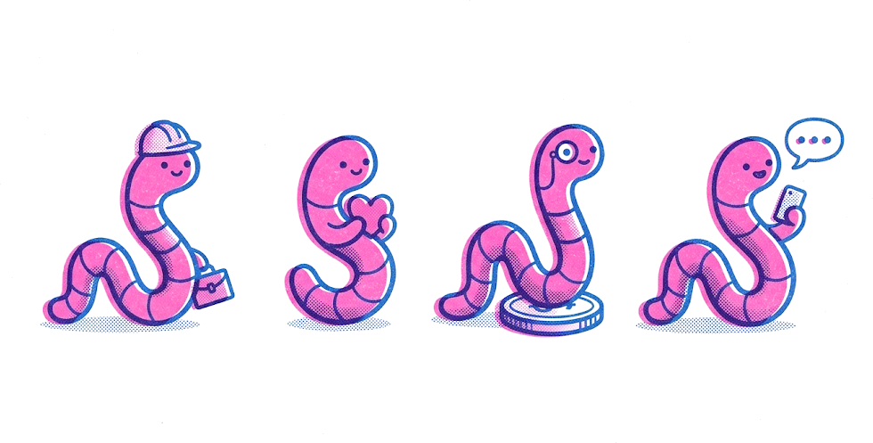
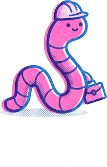
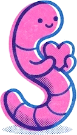
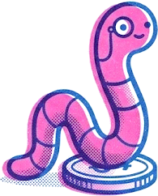
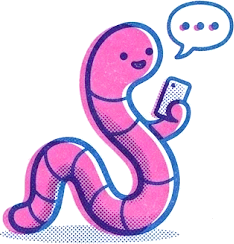

Agentes de IA open source que hacen las partes tediosas de la vida desde tu compu. Vos firmás, ellos imprimen.

Junta ofertas de los portales de empleo de Argentina, las ordena según tu perfil, adapta tu CV y sigue a los reclutadores por correo.
Ver en GitHub
Ordena tus matches por interés y escribe borradores con tu forma de hablar. No se envía nada hasta que lo aprobás.
Ver en GitHub
Investiga precios, noticias y balances de las empresas que seguís y explica su razonamiento. Es una herramienta de investigación, no un consejo financiero.
Ver en GitHub
Planifica tu contenido, adapta cada posteo a cada red y escribe borradores de respuesta a los comentarios, todo para que vos lo apruebes.
Ver en GitHub
Tus cuentas, chats y datos quedan en tu computadora. No hay ningún servidor de Worm Agents.
Los agentes redactan y sugieren. Lo que sale en tu nombre espera tu OK o un límite que pongas vos.
Todos los agentes están en GitHub. Leé el código, cambialo y usalo a tu manera.
Por ahora funcionan con Claude y están pensados para Argentina. Necesitás una PC con Windows y Claude Code con tu cuenta de Claude: usan tu propia suscripción, sin otra API key. LoveWorm también puede usar cualquier API compatible con OpenAI.